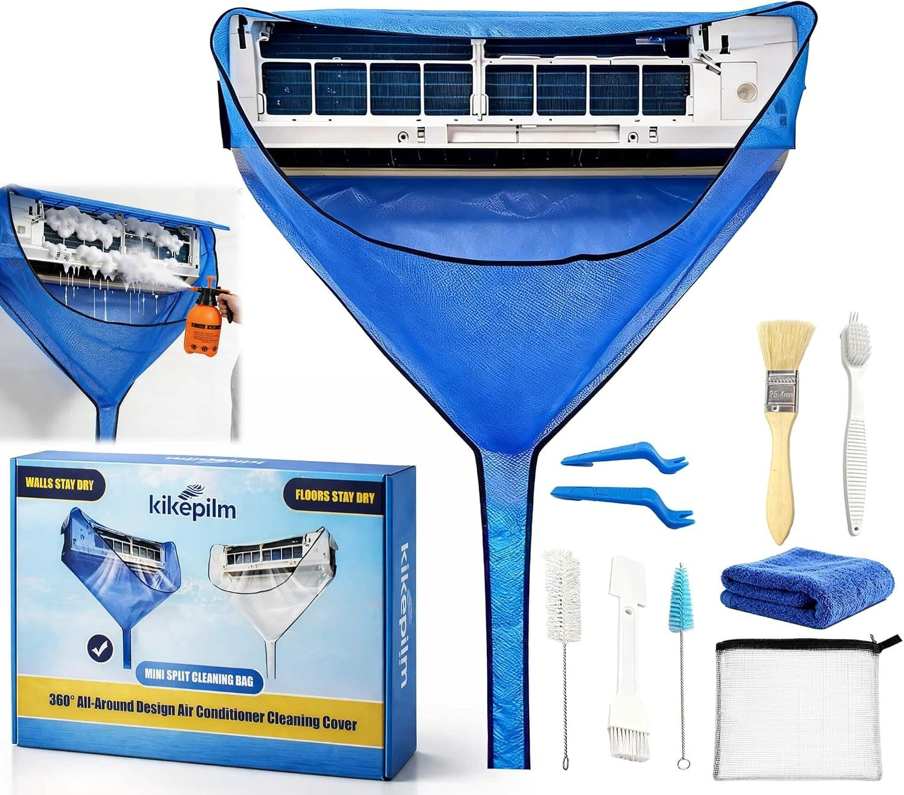

KIKEPILM
kit nettoyage climatisation split, kit entretien climatisation pour nettoyage climatisation et entretien climatiseur maison, bache nettoyage clim, Bleu Petit
37,90 €
Prix KIKEPILM, TVA incluse
| Marque | KIKEPILM |
| Modèle (ASIN) | B0GTRG6YN3 |
| Couleur | Bleu |
| Taille | petit |
| Prix | 37,90 € |
| Devise | EUR |
L'achat, la livraison et les retours se font via Amazon.
À propos de cet article
- 1. Nettoyage précis et protection fiable contre les éclaboussures Le kit nettoyage climatisation split Kikepilm est conçu pour faciliter le nettoyage de climatiseur mural à la Maison sans salir le mur ni le sol. Grâce à sa structure étanche et à son système d’évacuation, l’eau sale est dirigée de manière plus propre pendant le nettoyage clim. Ce kit entretien climatisation aide à réaliser un entretien plus serein sur différents Climatiseurs, tout en améliorant le confort du nettoyage climatisation maison
- 2. Conception adaptable pour différents climatiseurs muraux Cette bache nettoyage clim s’adapte à de nombreux formats de Climatiseur mural grâce à sa forme souple et à son maintien réglable. Utilisé comme kit de nettoyage climatisation split, l’ensemble épouse mieux les unités carrées, rectangulaires ou proches du mur pour un Nettoyage plus pratique. Son tissu renforcé favorise une bonne tenue pendant l’entretien climatisation et convient aux besoins courants de Clim et de Climatisation à domicile
- 3. Installation rapide pour un usage maison plus simple Pensé pour un usage quotidien, ce kit de nettoyage climatisation permet une mise en place rapide, même sans expérience particulière. Sa conception intuitive facilite le nettoyage climatisation et le rend plus accessible pour les particuliers comme pour les utilisateurs habitués à l’air conditioner mural. Pour un nettoyeur climatisation maison plus pratique, la housse se fixe rapidement et reste plus stable pendant le nettoyage clim rapide de votre installation
- 4. Ensemble complet pour l’entretien courant de la climatisation Ce kit nettoyage clim réunit les accessoires essentiels pour accompagner le nettoyage climatisation maison et l’entretien climatisation régulier. Il aide à enlever les résidus visibles sur les zones accessibles du Climatiseur et à garder l’espace plus propre pendant l’intervention. Utilisé comme nettoyeur climatisation, il convient aussi bien au kit entretien climatisation de la maison qu’au nettoyage de climatiseur dans un cadre d’usage fréquent
- 5. Une solution pratique pour le nettoyage régulier à la maison Développé pour le nettoyage climatisation des appareils muraux, ce kit de nettoyage climatisation split offre une solution plus propre et plus organisée pour l’entretien de vos Climatiseurs. Il peut être utilisé sur différents modèles domestiques, et convient aussi à certains besoins autour d’un climatiseur mobile selon la taille et la configuration. Idéal pour compléter votre routine de nettoyage clim, ce produit aide à garder votre système de Climatisation plus propre au quotidien avec de vrais produits de nettoyage pensés pour un usage domestique